Accessing the Account List
To access the list of accounts served by a particular distributor, press that distributor’s name on the Distributors page
(you can access a distributor’s account list from any section on the Distributors page – Favorites, Nearby, or the Distributors list).
We’ll use Columbia Santa Rosa as an example (gotta root for the local boy, right?).
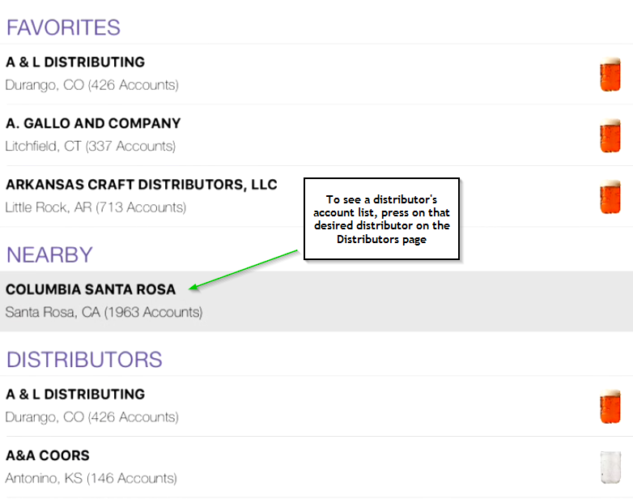
You’ll now be presented with the accounts for which this distributor is responsible.

Account List Overview
The Account List is broken into 5 sections:
- Advanced Filters
- Search and Ordering
- Account Information
- Map View
- Add Account
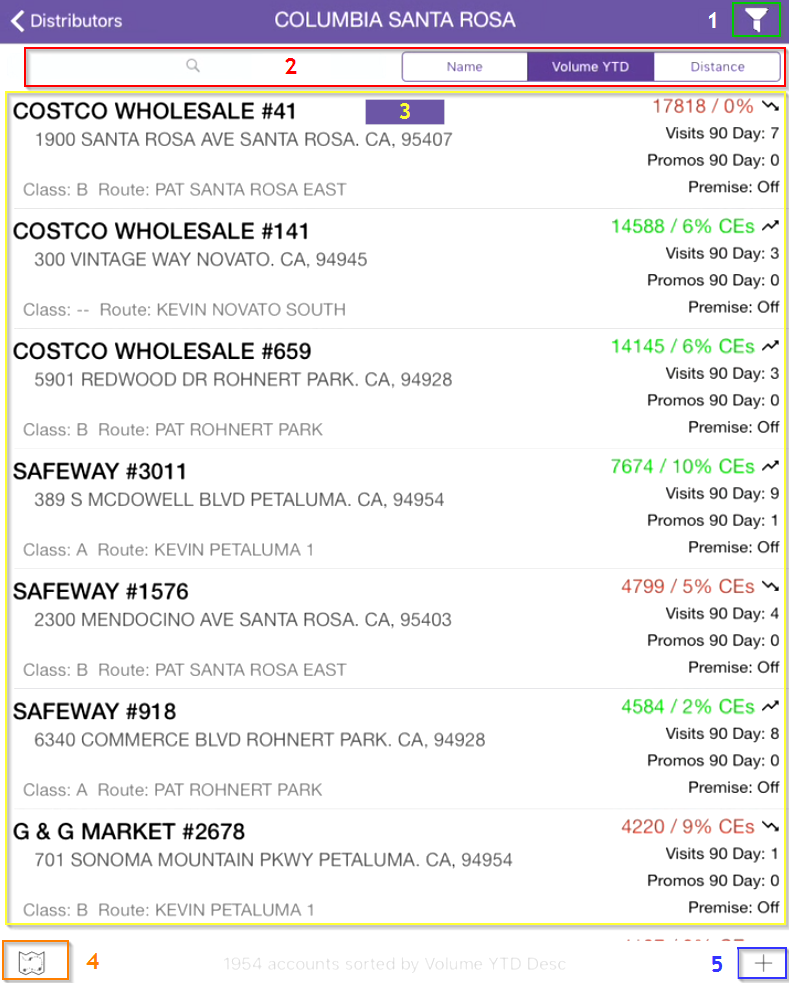
Let’s dig a bit deeper into each of these sections, shall we?
Advanced Filters
A new feature in CRM2 (this version of the CRM, in case you’re not sure),
the Advanced Filters allow you to slice and dice the Account List so that you can cut out the noise
and really focus on the accounts you want to see.
To access the Advanced Filters, press the filter icon in the top-right corner of the Accounts List page.
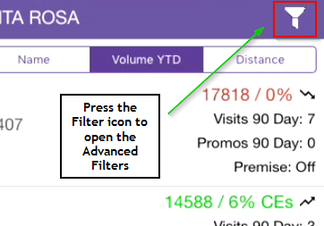
The Advanced Filters are comprised of 3 sections:
- Account Filter Categories: where we choose which the filter’s we’d like to set.
Filters can be applied by SKU, Brand, Pack Size, Route, Location, and/or Account Info.
- Selected Filter Options: all chosen filter criteria are listed here;
this area of the screen is always displayed and updates when the “Add to Filter” button is pressed (more on this in the example below).
- Filter Actions: a variety of actions we can perform on the filter set we’ve created.
- Clear - removes all filters from the Selected Filters Options
- Search Now - initiates the account search based on the filter criteria we've established
- Load - load saved filter criteria sets
- Save - save a set of filter criteria
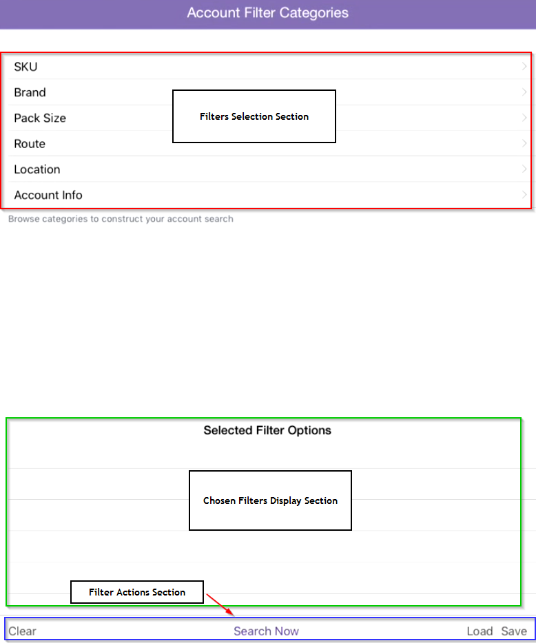
It might seem like a lot at first glance, but once you’ve walked through it a couple times it becomes more clear. How’s about an example?
Advanced Filters Example
Let’s say we want to filter the accounts we see in the Account List by SKU. First, select SKU from the Account Filter Categories.
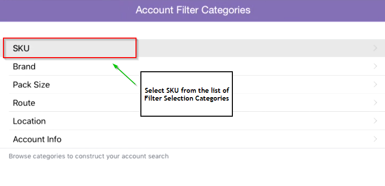
Once in the SKU Filter, we’re presented with a variety of filtering and selecting possibilities.
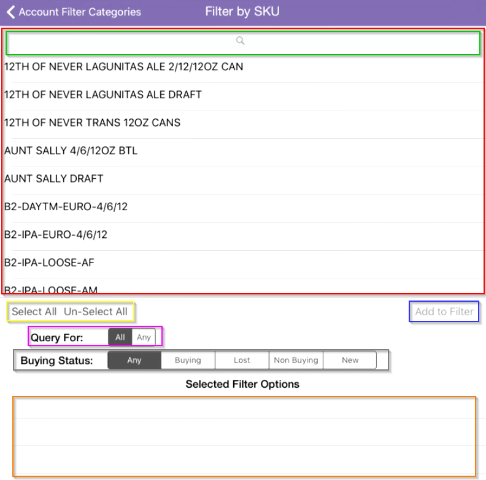
Here’s an outline of the function behind each of the items on the page:
- Item Selection List: in this case, we see a list of all possible SKUs
- Item Search Bar: Allows you to search for specific items in the Item Selection List
- Select All Un-Select All:Choose all items in the Item Selection List, or remove all currently selected items
- Query For:A delimiter which affects how the search is performed
-
If All is selected, then an account will appear in the Account List only if all of the items
chosen in the Item Selection List exist for that account
(think of this like
and
, as in this and this and this and this
)
-
If Any is selected, then an account will appear in the Account List if any of the items
chosen in the Item Selection List exist for that account (think of this like
either/or
,
as in either this or this or this or this
)
- Buying Status: This means what the status of the filter item is at the account
- Any: Accounts with filter items that have any of the subsequent statuses are displayed
- Think SKUs with any of the subsequent statuses
- Buying: Accounts having a status of Buying for the chosen filter items will be displayed
- Think SKUs the account is currently buying
- Lost: Accounts having a status of Lost for the chosen filter items will be displayed
- Think SKUs the account was buying but are no longer (after 30 days, 30 days or less of not buying)
- Non Buying: Accounts having a status of Non Buying for the chosen filter items will be displayed
- Think SKUs the account was buying but are no longer (greater than 60 days not buying)
- New: Accounts having a status of New for the chosen filter items will be displayed
- Think SKUs that have been recently purchased by the account (30 days or less)
- Add to Filter: After selecting the filter items and the desired Query For and Buying Status options,
press Add to Filter to add these filter criteria to the Selected Filter Options list
- Selected Filter Options: This is the same section as described above in
Advanced Filters
Let’s continue with our SKU example. If we want to filter for accounts that are newly carrying both IPA Draft and Little Sumpin’ Draft,
we would setup the filters as follows:
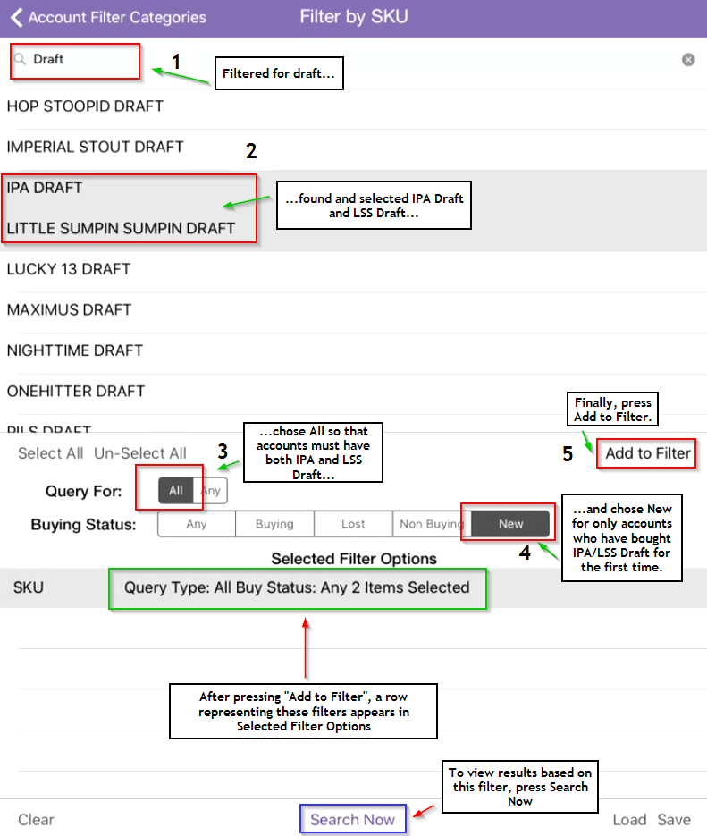
Let's go through the steps on the screenshot one-by-one:
- Type Draft in the search bar to find all Draft SKUs.
- Select IPA DRAFT and LITTLE SUMPIN SUMPIN DRAFT from the result shown in the filter items list.
- Set Query For to All – to be displayed in the Accounts List, accounts must carry both IPA and LSS Draft.
- Set Buying Status to New – to be displayed in the Accounts List, IPA and LSS Draft must be new SKUs for the account.
- Press
Add to Filter
– this adds the SKU filters we’ve established (filter items, Query For, and Buying Status) to the Selected Filter Options list.
If you can’t remember what filters were setup, press that row on the Selected Filter Options list to get an overview of that filter set.
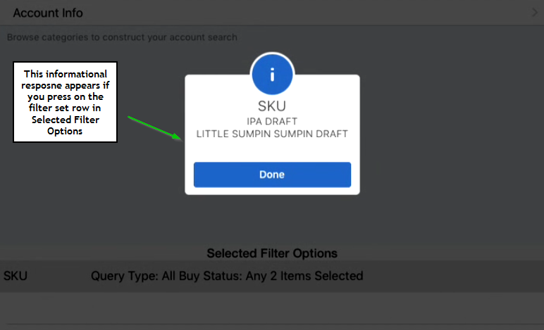
Now, to see the results in the Accounts List, press Search Now
.
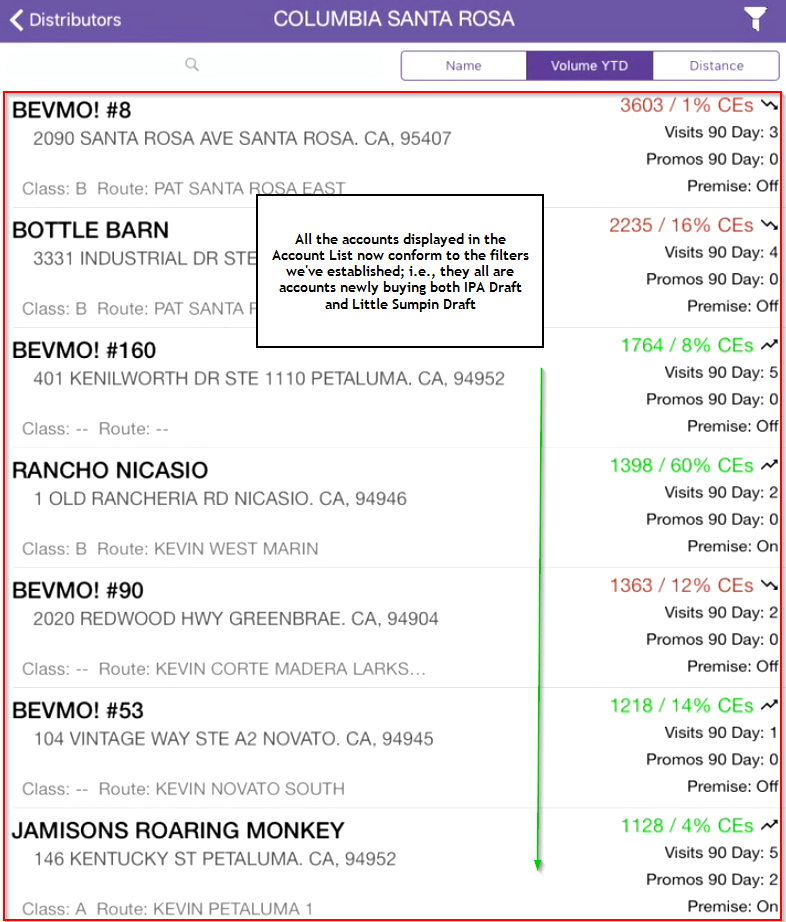
You can have up to 6 filter sets active at once, one for each Filter Category.
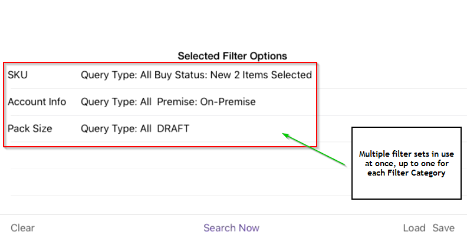
Removing Filters
To remove a filter from the Selected Filter Options list, swipe left on the desired filter. This will cause a red “Remove” button to appear.
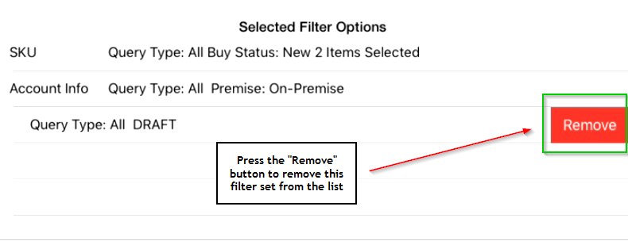
Once pressed, the filter set will be removed from the Selected Filter Options.
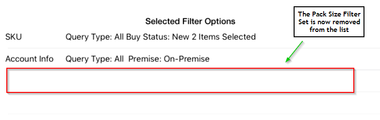
Save Filters
To save a set of filters, press the Save button in the bottom-right corner of the page.
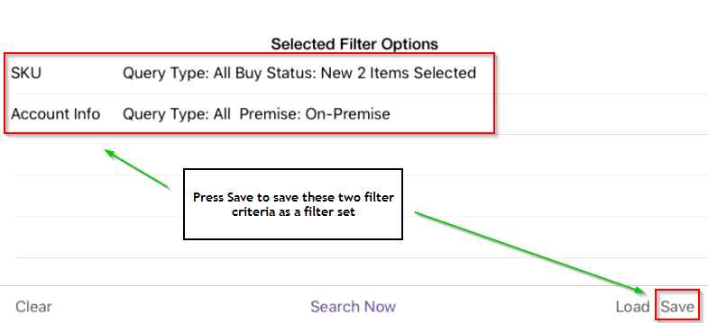
Once pressed, a window will appear asking you to give name the saved filter set.
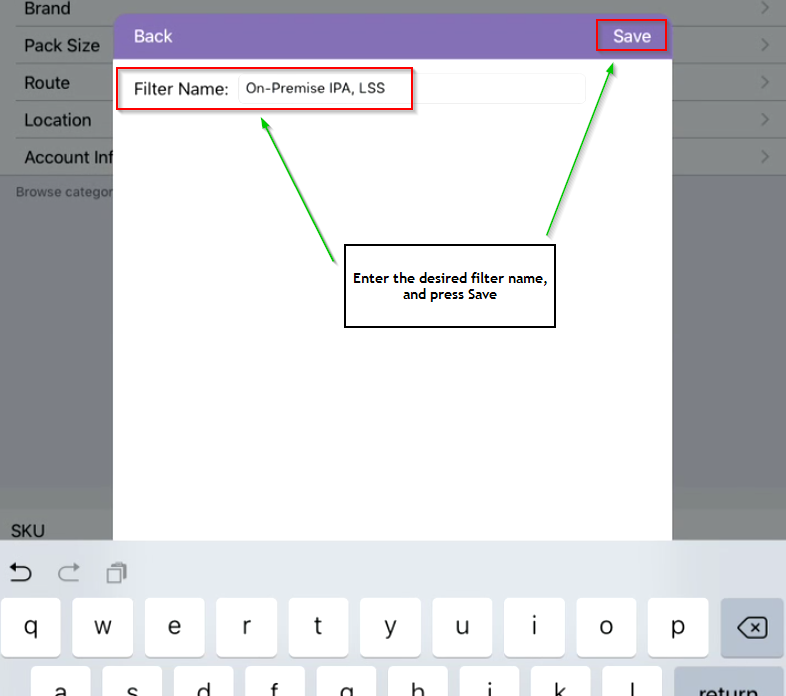
After saving, this filter set will be available for use any time.
Load Filters
To load a saved filter set, press the Load button, located to the left of the Save button in the bottom-right of the page.
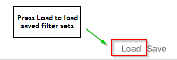
Once pressed, a window will appear with a list of all saved filter sets.
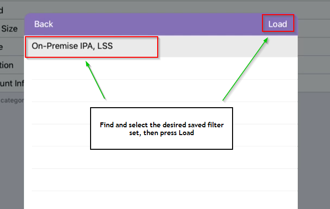
Find and select the set one you’re looking for. Once loaded, the filter set will appear in the Selected Filter Options list.
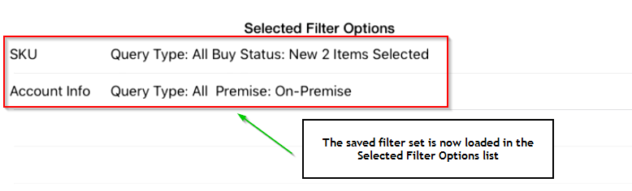